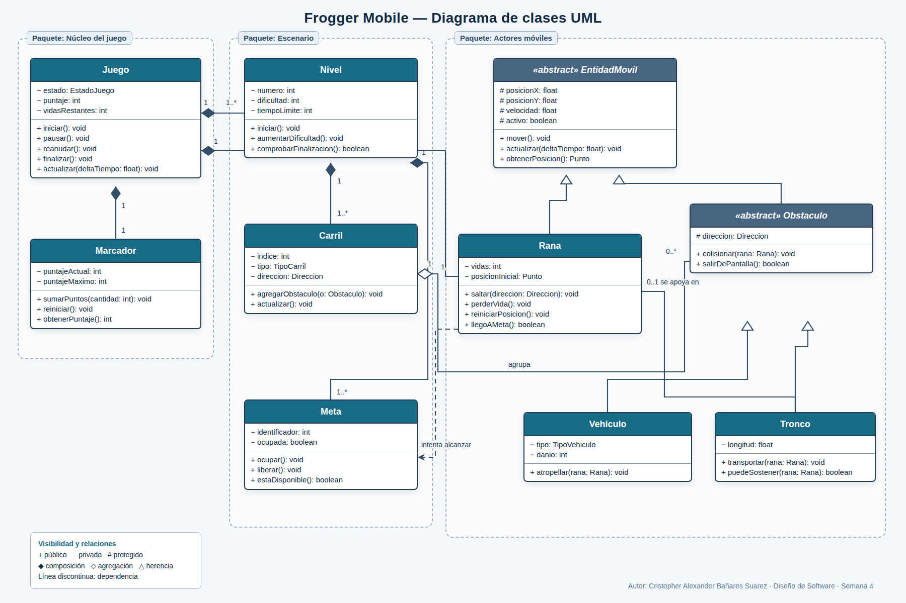

Estudiante: Cristopher Alexander Bañares Suarez
Asignatura: Diseño de Software
Producto: Informe y diagrama de clases UML
Modalidad: Trabajo individual
El presente informe transforma los elementos relevantes del videojuego Frogger Mobile en un modelo estructural de clases UML.
El propósito es representar las responsabilidades, los datos y las colaboraciones necesarias para una versión móvil del juego. En ella, una rana cruza un escenario dividido en carriles, evita vehículos, utiliza troncos como apoyo y alcanza una o más metas. El modelo se mantiene en un nivel conceptual: describe la estructura del dominio sin incorporar detalles de interfaz gráfica, almacenamiento o plataforma que no son necesarios para explicar la mecánica principal.
Diseñar un diagrama de clases con atributos, métodos, visibilidad, multiplicidades y relaciones UML, aplicando abstracción, encapsulamiento, modularidad y jerarquía simple.
EstadoJuego, Direccion, TipoCarril y TipoVehiculo restringen valores válidos, aunque no se desarrollan como clases para evitar detalle innecesario.| Clase | Responsabilidad | Atributos principales | Métodos principales |
|---|---|---|---|
| Juego | Coordinar el ciclo general y el estado de la partida. | estado, puntaje, vidasRestantes | iniciar, pausar, reanudar, finalizar, actualizar |
| Marcador | Administrar el puntaje actual y máximo. | puntajeActual, puntajeMaximo | sumarPuntos, reiniciar, obtenerPuntaje |
| Nivel | Representar una etapa, su dificultad y condición de término. | numero, dificultad, tiempoLimite | iniciar, aumentarDificultad, comprobarFinalizacion |
| Carril | Organizar una franja del escenario y sus obstáculos. | indice, tipo, direccion | agregarObstaculo, actualizar |
| Meta | Representar un destino disponible u ocupado. | identificador, ocupada | ocupar, liberar, estaDisponible |
| EntidadMovil | Abstraer estado y operaciones compartidas por actores que se desplazan. | posicionX, posicionY, velocidad, activo | mover, actualizar, obtenerPosicion |
| Rana | Representar al personaje controlado y sus acciones. | vidas, posicionInicial | saltar, perderVida, reiniciarPosicion, llegoAMeta |
| Obstaculo | Definir el comportamiento común de objetos de riesgo o apoyo. | direccion | colisionar, salirDePantalla |
| Vehiculo | Especializar un obstáculo dañino terrestre. | tipo, danio | atropellar |
| Tronco | Especializar un obstáculo acuático que puede transportar a la rana. | longitud | transportar, puedeSostener |
Los atributos describen el estado que cada clase necesita conservar. Las operaciones expresan comportamientos propios de esa clase y evitan que otras entidades manipulen directamente sus datos. Por ejemplo, el puntaje se modifica mediante sumarPuntos() y la disponibilidad de una meta mediante ocupar() o liberar().
EntidadMovil y Obstaculo son clases abstractas: organizan características comunes, pero el juego trabaja con instancias concretas como Rana, Vehiculo y Tronco.
El modelo conserva solo los elementos esenciales de la mecánica. Rana conoce sus vidas y posición inicial; no incluye aspectos visuales que corresponden a otros subsistemas.
Los atributos se declaran privados (−) para impedir cambios externos sin control. Los métodos públicos (+) forman la interfaz de cada clase. Los datos reutilizables por subclases son protegidos (#).
Las clases se separan en tres paquetes conceptuales: Núcleo del juego, Escenario y Actores móviles. Cada módulo concentra una responsabilidad y mantiene relaciones explícitas con los demás.
EntidadMovil generaliza a Rana y Obstaculo. A su vez, Vehiculo y Tronco especializan a Obstaculo. Así se reutilizan posición, velocidad y actualización sin duplicación.
| Símbolo | Uso en el modelo | Justificación |
|---|---|---|
| − Privado | Estado, puntaje, vidas, dificultad, ocupación y tipos concretos. | Protege invariantes y obliga a usar operaciones controladas. |
| # Protegido | Posición, velocidad, estado activo y dirección. | Permite que las especializaciones implementen su movimiento sin exponer datos al resto del sistema. |
| + Público | Acciones como iniciar, saltar, colisionar, ocupar y actualizar. | Define los servicios mediante los cuales colaboran los objetos. |
La separación propuesta permite incorporar nuevos obstáculos —por ejemplo, una tortuga o una serpiente— como especializaciones sin modificar el contrato general de movimiento. También facilita cambiar el número de carriles o metas por nivel sin alterar las clases de los actores móviles.
meta.ocupada = true, la rana solicita la operación meta.ocupar(). La propia clase puede verificar previamente si la meta está disponible.| Relación | Notación | Interpretación |
|---|---|---|
| Juego–Marcador | Composición 1 a 1 | El marcador pertenece a una partida y su ciclo de vida depende de ella. |
| Juego–Rana | Composición 1 a 1 | Cada partida controla exactamente una rana activa. |
| Juego–Nivel | Composición 1 a 1..* | Un juego contiene uno o más niveles; estos forman parte de su estructura. |
| Nivel–Carril | Composición 1 a 1..* | Un nivel se construye con uno o más carriles. |
| Nivel–Meta | Composición 1 a 1..* | Las metas son partes propias del nivel. |
| Carril–Obstaculo | Agregación 1 a 0..* | Un carril agrupa obstáculos, pero puede existir temporalmente vacío. |
| EntidadMovil–Rana/Obstaculo | Generalización | Las subclases heredan posición, velocidad y comportamiento de actualización. |
| Obstaculo–Vehiculo/Tronco | Generalización | Cada tipo implementa un efecto particular sobre la rana. |
| Rana–Tronco | Asociación 1 a 0..1 | En un instante, la rana puede estar apoyada en ningún tronco o en uno. |
| Rana–Meta | Dependencia | La rana consulta o usa temporalmente una meta para completar el recorrido. |
Juego.iniciar() activa el nivel y reinicia el marcador.Rana.saltar(direccion).Juego.actualizar(deltaTiempo) solicita la actualización de entidades móviles.atropellar(rana) y la rana procesa perderVida().transportar(rana).Meta.ocupar() y se suman puntos.Las multiplicidades precisan cuántos objetos pueden participar en cada relación. La composición se reserva para dependencias fuertes de ciclo de vida, mientras que la agregación expresa una agrupación más flexible. La herencia se utiliza únicamente donde existe una relación “es-un”, evitando usarla como sustituto de una asociación.
La figura presenta las clases organizadas por módulos, con sus atributos, operaciones, niveles de visibilidad y relaciones principales.

Figura 1. Diagrama de clases UML propuesto para Frogger Mobile. Elaboración propia.
El modelo propuesto representa la estructura central de Frogger Mobile mediante clases con responsabilidades delimitadas. La abstracción evita detalles ajenos a la mecánica; el encapsulamiento protege el estado; la modularidad organiza el sistema en componentes comprensibles; y la jerarquía reutiliza las características comunes de las entidades móviles.
Las relaciones UML muestran tanto la pertenencia fuerte de niveles y elementos estructurales como las interacciones temporales entre la rana, los troncos y las metas. Las multiplicidades eliminan ambigüedades y permiten comprender cuántas instancias participan en cada colaboración.
| Clases y atributos | Se identifican diez clases clave, con atributos y métodos vinculados a responsabilidades concretas. |
| Abstracción y encapsulamiento | Se excluyen detalles irrelevantes y se aplican correctamente las visibilidades pública, privada y protegida. |
| Modularidad y relaciones | El modelo usa tres paquetes, generalización, composición, agregación, asociación, dependencia y multiplicidades. |
| Claridad y legibilidad | Las clases están agrupadas por función, se utiliza una leyenda y las relaciones poseen etiquetas cuando aportan significado. |
| Formato solicitado | Se adjuntan el informe PDF, el diagrama PNG y el archivo editable PlantUML. |
Booch, G., Rumbaugh, J. y Jacobson, I. (2006). El lenguaje unificado de modelado: guía del usuario. Pearson.
Pressman, R. (2010). Ingeniería de software: un enfoque práctico. McGraw-Hill.
Schmuller, J. (2004). Aprenda UML en 24 horas. Pearson Educación.
Santo Tomás Online. (s. f.). Diseño de software: Apunte semana 4 [Material de asignatura].
Sommerville, I. (2011). Ingeniería del software (9.ª ed.). Pearson.